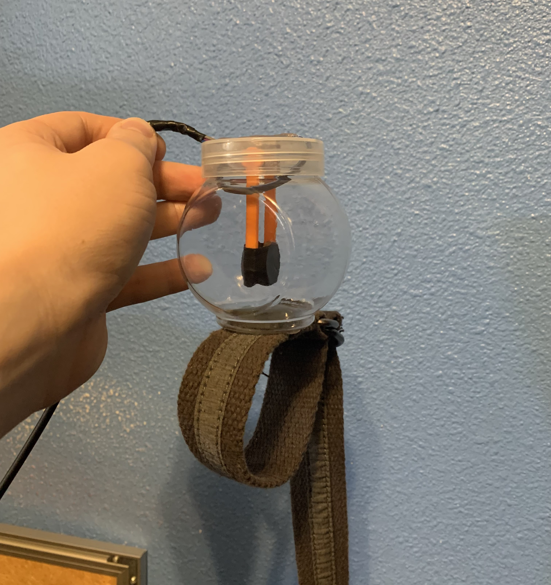

Timofey Shichalin
Project date: October 2024
Bin Challenge is a system that allows users to track the angles of their upper and lower arm. The project consists of 2 parts:
The physical system is attached to an arm and measures the angle at which the sensors are tilted. The app then fetches this data from the microcontroller via WiFi and uses it to display the arm in the app.
To better understand how the microcontroller and the app work together, see a more detailed overview of the project below.
Losing sucks. Losing as a result of an unfairly ruled competition sucks even more.
I am currently an electrical assembly technician, so we scrap a ton of wire. One day, as I was talking to my lead, I randomly picked up the bin we used for scrap wire and held it in front of me, arm straight and parallel to the ground. An exciting idea struck my lead: create a leaderboard to see how long each person can hold the bin in front of themselves.
I attached wires to both handles and put a metal pole through the wires so that it would be more comfortable to hold it:
Most of us held the bin straight in front of us, parallel to the ground. However, I began to see some people drop their arm really low and still continue the attempt. We tried to come up with a justice system to ensure that the competition was fair, but there were still disagreements on whether a person dropped their arm too low.
Then one day, I came in to work to see that the previous record was beat by a Cross-Fitter from our office (alledgedly also the strongest guy in the comapny). My lead claimed that the fine individual held his arm straight, but I was still motivated to implement a system that would serve all of us justice.
Video is not yet available. Expect to see it January 8, 2025.
The physical system consists of:
The biggest problem I had was finding level modules that a microcontroller could read. My only solution was to use angle sensor modules and attach 3-D printed levers to them. Gravity pulls the lever down, rotating angle sensor rotor. I also attached a few pennies to the end of the lever; this weight really helps the lever stay pointing down.
The final step for the level sensors was to modify them in a way to make it easy to attach them to the arm. I found that D-ring belts worked very well for this.
I programmed the microcontroller to allow devices to connect to it through WiFi. The microcontroller repratedly reads the output values of the angle sensors and stores them. This process is done 20 times per second. I then programmed the microcontroller to have two endpoints that send the recorded sensor values: one for the upper arm angle, and one for the lower arm angle. Devices that are connected to the microcontroller through WiFi can send requests to these endpoints and receive the angle sensor values.
The app fetches the angle sensor data from the endpoints 20 times per second. This data is then converted from a 0 - 4095 value to an angle. This angle data is used to display the arm on the stick figure and to determine whether the user dropped (or raised) their arm too far.
When testing my system, I instantly noticed a problem. When I would hold my arm out straight, the app showed that my arm was not near 0 degrees, but closer to 10 - 15 degrees. The reason for this is the levels being attached to the top surface of the arm, and the outside of the arm has a natural bend to it. So, I implemented a "zero" functionality in the app, similar to what you might see on a cooking scale. This solution worked very well.